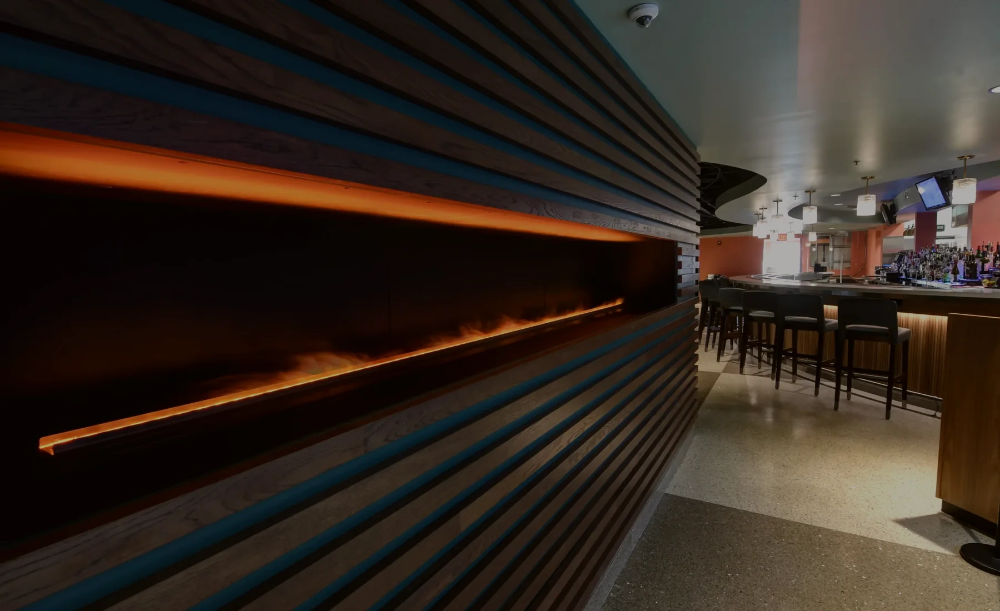
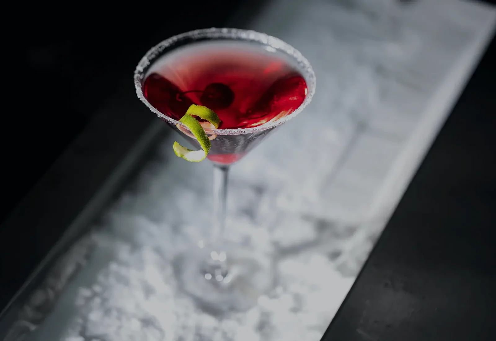
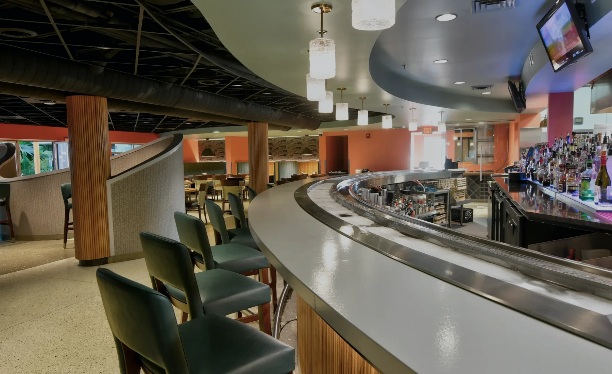
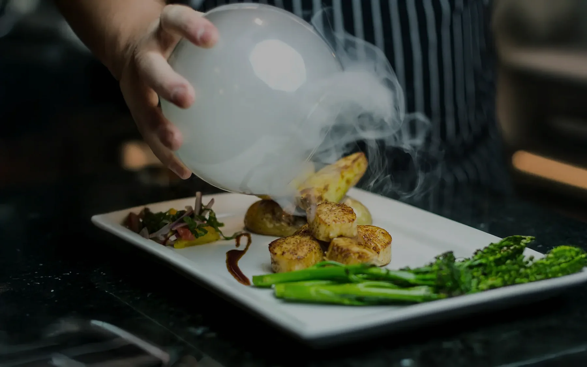
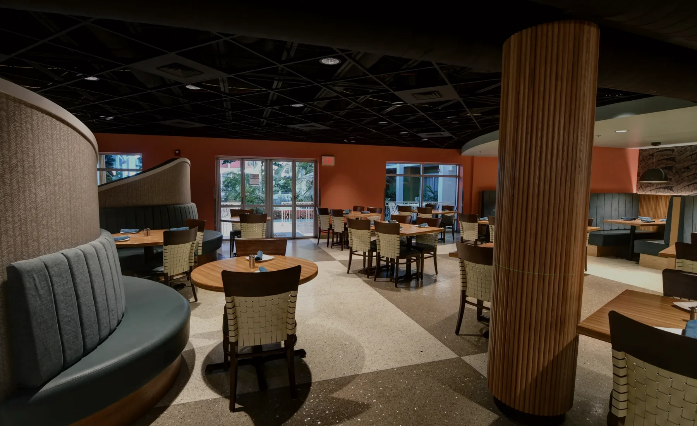

01
Fire
Warmth you can feel before the first plate arrives.
The energy of the open kitchen, copper light, char, smoke, and the glow of the room create a sense of occasion without making the experience feel formal or distant.


The Fire & Ice experience
Atmosphere creates anticipation. Food earns attention. Hospitality turns the evening into something guests carry with them.
The story of the evening
Fire brings warmth, energy, craft, and movement. Ice brings precision, freshness, clarity, and calm. Fire & Ice lives in the balance—dramatic enough to feel special, comfortable enough to make guests want to stay.
Fire
The energy of the open kitchen, copper light, char, smoke, and the glow of the room create a sense of occasion without making the experience feel formal or distant.

Ice
A six-inch frozen rail follows the curve of the bar, keeping drinks beautifully chilled and turning a cocktail into part of the setting. It is a place to meet, linger, and begin the night.

Presentation
Flaming dishes, chilled seafood, rolling mist, and carefully timed tableside moments are designed to create wonder while keeping the food—not the effect—at the center of the experience.

Hospitality
Great lighting and memorable presentations may draw guests in. Genuine care is what makes them return. Every interaction should feel confident, attentive, relaxed, and personal.

Find your moment
Come for a cocktail, a business dinner, a family gathering, a date night, or a celebration. The room is designed to meet the occasion without losing its own point of view.
Reserve your table